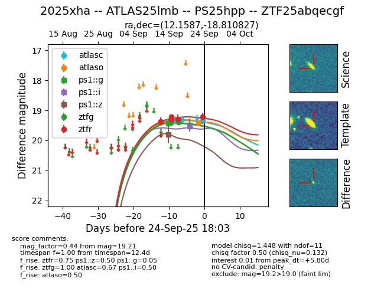
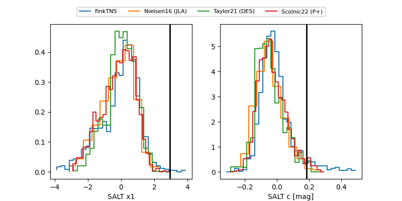

FINK: ZTF25abqecgf
Lasair: ZTF25abqecgf
ALeRCE: ZTF25abqecgf
TNS: 2025xha
YSE: 2025xha
ZTF25abqecgf (ztf,fink)
2025xha (tns,yse)
ATLAS25lmb (atlas)
PS25hpp (panstarrs)
equatorial (ra, dec) = (12.1587,-18.81083)
galactic (l, b) = (118.3551,-81.65765)


last atlasc=19.36, atlaso=19.41, ps1::g=19.49, ps1::i=19.54, ps1::z=19.80, ztfg=19.38, ztfr=19.21
4 atlasc, 1 atlaso, 2 ps1::g, 1 ps1::i, 1 ps1::z, 2 ztfg, 5 ztfr detections